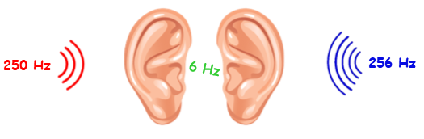

What are they?
Using headphones, the left and right ears are played continuous tones of slightly differing frequencies.
An illusory ‘beat’ is heard at the average frequency of tones.
The amplitude, which is related to loudness, increases and decreases with a frequency equal to the difference between the tones.1
It is this frequency difference that is important.

Believe it or not, binaural beats were first discovered in the 1800s using long tubes to carry the ringing of tuning forks to the separate ears.
It was only in the 1970s however that their clinical potential was first highlighted. 1
Today, binaural beats are used to ease anxiety, improve focus, help induce sleep or manage pain. 2
How do they occur?
You may believe sounds arriving at the left and right ears are processed and perceived separately from one another.
In fact, it is often important the auditory system combines these inputs.
For example, when following a conversation in a noisy room, one ear may pick up more speech than the other.
To give you the best chance of making sense of the conversation, data from the separate ears is integrated in the brainstem before making its way to higher auditory cortices as a single unified percept. 3
Scientists call this process binaural integration and it is an important adaptation. For binaural beats it seems this integration primarily occurs in the superior olivary nuclei of the brainstem. 14
How are they useful?
Since the 1970s binaural beats have been studied and used as a tool for brainwave entrainment.
The goal is to synchronise the frequency of brainwaves to a periodic external stimulus, enabling us to influence the perceiver’s state of consciousness. 5
The entraining frequency is not the average of the two tones however, but the frequency difference between them!
Typically, this is between 0.5 and 40 Hz, depending on the desired effect.
Brainwaves have been studied for many years and are merely patterns of rhythmic electrical activity between different regions of the brain.
They are classified in to five main categories depending on their frequency. Each category is associated with different states of brain activity and function, outlined in the table below. 6
| Frequency Band | Frequency Range | Brain States |
|---|---|---|
| Gamma (γ) | 35 - 80 Hz | Concentration |
| Beta (β) | 12 - 35 Hz | Anxiety dominant, active, external attention, relaxed |
| Alpha (α) | 8 - 12 Hz | Very relaxed, passive attention |
| Theta (θ) | 4 - 8 Hz | Deeply relaxed, inward focused |
| Delta (δ) | 0.5 - 4 Hz | Sleep |